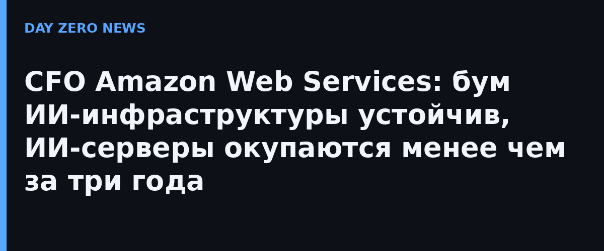

Финансовый директор Amazon Web Services Джон Фелтон в эксклюзивном интервью Axios ответил на главный вопрос рынка: не лопнет ли пузырь ИИ-инфраструктуры. Его вердикт — бум устойчивый, потому что за ним стоит реальная выручка, а не только энтузиазм.
По словам Фелтона, портфель заказов AWS приближается к $500 млрд (данные второго квартала), причём это смесь крупных корпораций, больших ИИ-лабораторий и малого-среднего бизнеса. Выручка AWS во втором квартале — $42,2 млрд, рост на 36,7% год к году, а годовой темп выручки от ИИ превысил $25 млрд и растёт на трёхзначные проценты. Главное же возражение скептикам: «Мы видим окупаемость этих серверов менее чем за три года», — заявил Фелтон.
Высказался Фелтон сразу после доклада Gartner, напугавшего инвесторов: аналитики оценили, что к концу 2030 года более $3,5 трлн расходов на ИИ-инфраструктуру «может быть подвержено обесценению», а свыше 80% специализированных ИИ-облаков прекратят независимое существование к 2030 году. Фелтон признаёт риски, но подчёркивает: гиперскейлер с диверсифицированными доходами — среди тех, кто такие встряски переживёт лучше всех. «Спрос реальный», — отрезал он.
Фелтон настаивает: зрелый подход к ИИ — инструмент роста производительности, а не только экономии. «ИИ — отличный инструмент для сокращения рутины», — говорит он о своей финансовой команде: профессионалы переключаются на задачи с добавленной стоимостью. AWS даже проанализировала собственное потребление токенов и нашла почти линейную зависимость между их расходом и продуктивностью — лимиты на токены в компании считает контрпродуктивными. А движение против дата-центров его удивляет: здания живут по 30 лет и переживут несколько поколений чипов, заверяет CFO. В AWS в этом году работают крупнейшие в истории компании капвложения в инфраструктуру и одновременно масштабные сокращения корпоративного штата — Фелтон связывает одно с другим через ту самую «переориентацию времени» сотрудников.
Отдельного официального анонса на эту тему нет: первопубликация — эксклюзивное интервью Axios, приведённые квартальные цифры совпадают с официальным отчётом Amazon за второй квартал.